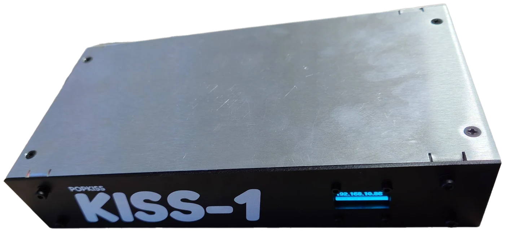
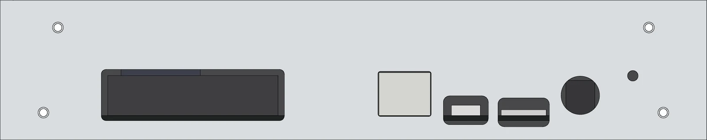
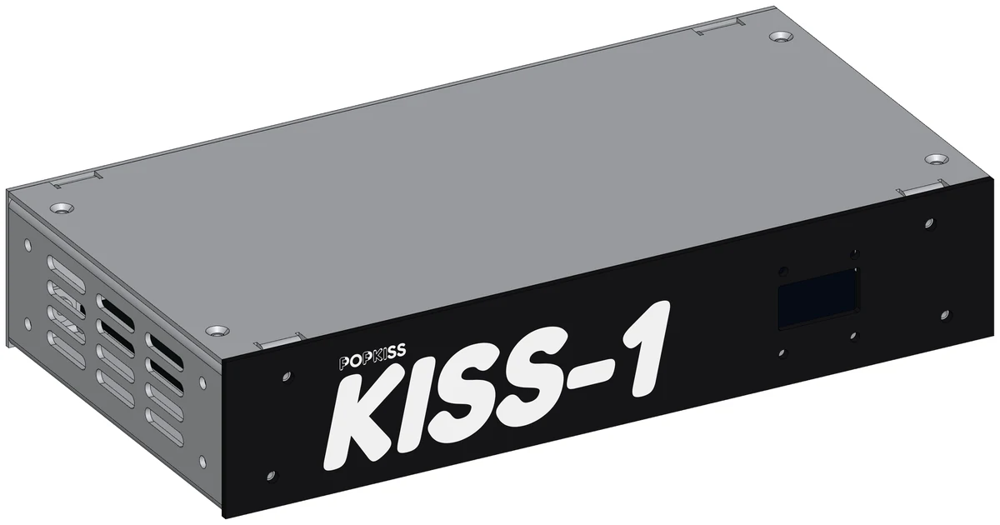
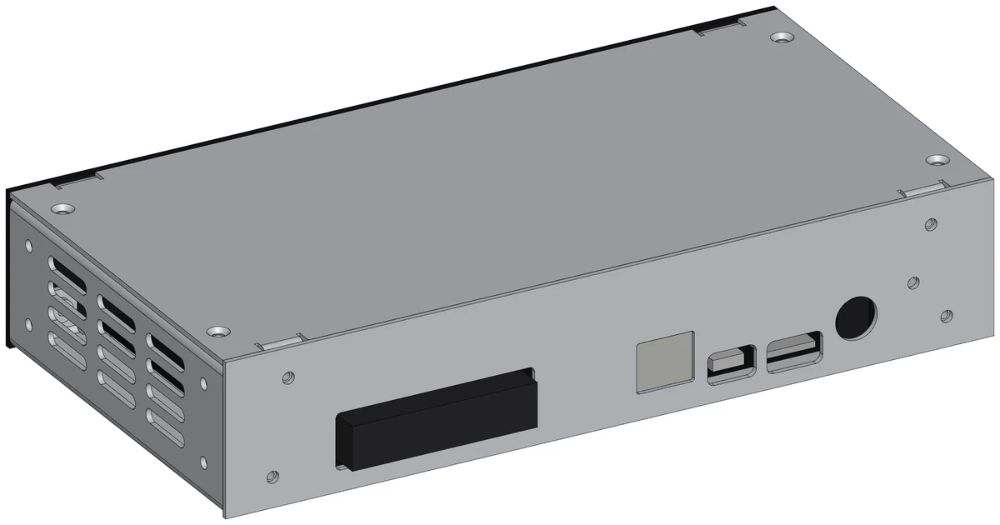
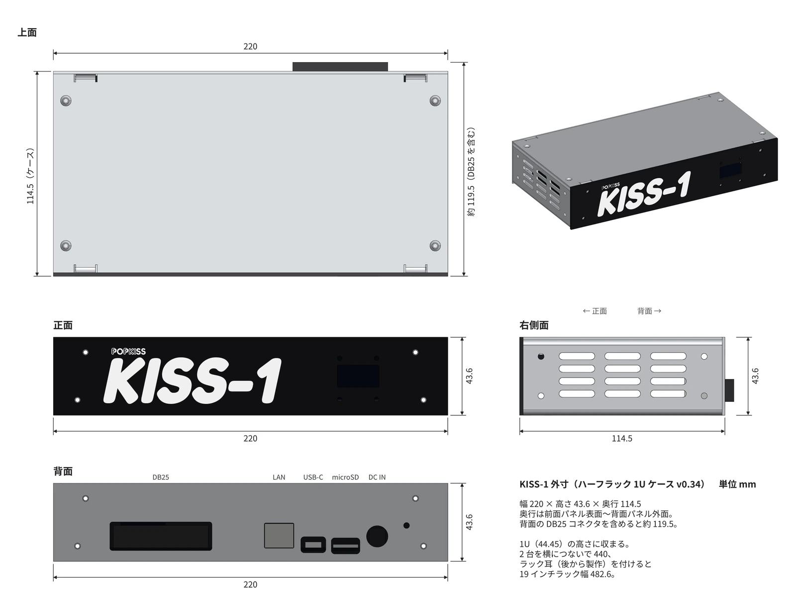
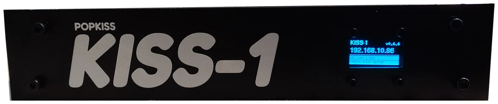
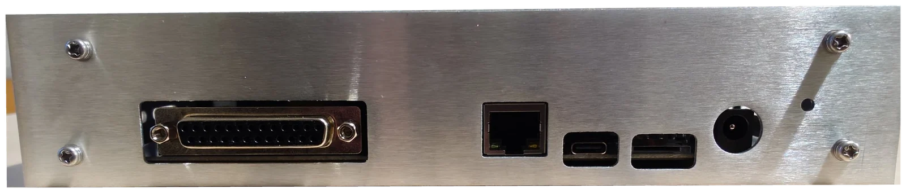

KISS-1
開発中IN DEVELOPMENTDB25 の 25 本のピンを、入力・出力・COM・GND・5V に自由に割り当てられるタリー / GPIO インターフェイスです。スイッチャーや TSL 5.0 からタリーを受けて接点で出したり、接点の入力を TSL 5.0 で送ったりできます。設定はすべてブラウザから行えます。ESP32 なので、自作のファームウェアを自由に書き込むこともできます。
A tally / GPIO interface whose 25 DB25 pins can each be set as input, output, COM, GND or 5 V. It takes tally from a switcher or TSL 5.0 and drives contacts, or sends contact inputs out as TSL 5.0. Everything is set up from a web browser, and since it runs on an ESP32, you can also flash your own firmware.

前面と背面Front and rear FRONT / REAR
 1
1- 1状態 LED の窓（φ3.0）Status LED window (3.0 mm)
本体の状態を表す LED がここから見えます。
The status LED of the unit shows through here.

123456- 1DB25（メス）DB25 (female)
タリー / GPIO の端子です。25 本すべてのピンを、入力・出力・COM・GND・5V に割り当てられます。
The tally / GPIO connector. All 25 pins can be set as input, output, COM, GND or 5 V.
- 2LAN（RJ45）LAN (RJ45)
スイッチャーや TSL 5.0 とのやり取りと、ブラウザからの設定に使います。
For talking to switchers and TSL 5.0, and for setup from a web browser.
- 3USB-CUSB-C
ファームウェアの書き込み用です。
For flashing firmware.
- 4microSDmicroSD
設定を保存できます。カードが入っていれば、起動時にカードの設定を使います。
Saves the settings. If a card is inserted, the unit uses the settings on the card at power-on.
- 5DC 入力DC in
9–24 V（最大 36 W）。+5V 出力を使うときは 12 V・3 A 以上の電源を使ってください。
9–24 V (36 W max). When using the +5 V output, use a supply of 12 V, 3 A or more.
- 6ケーブルクランプ用の穴（φ3.3）Cable clamp hole (3.3 mm)
DC ケーブルを固定するクランプを付けるための穴です（オプション）。
For an optional clamp that holds the DC cable in place.
外観と寸法Design and dimensions DIMENSIONS


幅 × 高さ × 奥行（奥行は前面パネルの表面から背面パネルの外面まで。背面の DB25 コネクタを含めると約 119.5 mm）。高さは 1U（44.45 mm）に収まります。2 台を横につなぐと幅 440 mm、ラック耳（後から製作）を付けると 19 インチラック（482.6 mm）に入ります。
Width × height × depth (depth is from the front panel surface to the outside of the rear panel; about 119.5 mm including the DB25 connector). The height fits within 1U (44.45 mm). Two units joined side by side are 440 mm wide, and with rack ears (to be made later) they fit a 19-inch rack (482.6 mm).

写真Photos PHOTOS


試作機の写真です。
Photos of a prototype unit.
ピン割り当ての例Pin assignment example DB25
割り当ての一例です。どのピンを何にするかは自由に決められます。
One example assignment. Any pin can be set to any role.
主な機能Features FEATURES
PIN ASSIGN全ピン自由アサインAssign every pin
DB25 のどのピンも、入力・出力・COM・GND・5V に割り当てられます。アナログオーディオケーブル（TASCAM 配列）と Hollyland の配列はプリセット入り。自分の配列も名前を付けて保存できます。
Any DB25 pin can be an input, output, COM, GND or 5 V. Presets are built in for analog audio snake cables (TASCAM pinout) and Hollyland, and you can save your own layouts by name.
TALLY SOURCEタリーの入力元Tally sources
スイッチャーから直接、または TSL 5.0 の受信から選べます。DB25 の接点入力は、どの入力元のときも一緒に使えます。タリー以外の汎用 GPIO としても使えます。
Take tally straight from a switcher or from TSL 5.0. DB25 contact inputs work alongside whichever source you choose. It also works as a general-purpose GPIO box.
TSL OUTTSL 5.0 で送信Send as TSL 5.0
受け取ったタリーを TSL 5.0 で送り出します。TSL に対応したマルチビューアーやタリーシステムにそのまま渡せます。
Tally it receives is sent out as TSL 5.0, ready for multiviewers and tally systems that speak TSL.
LINK2 台以上で接点を延長Extend contacts over LAN
KISS-1 同士を LAN でつなげば、片方の接点入力をもう片方の接点出力に送れます。離れた場所への GPI / タリーの引き回しに。
Link two or more KISS-1 units over the LAN and contact inputs on one appear as contact outputs on another. Useful for getting GPI and tally to far-off places.
SCRIPT本体で動くスクリプトScripts on the unit
Arduino のような書き方（setup / loop）のスクリプトを本体で実行できます。ピンの操作やタリーの上書きに加えて、UDP・TCP・HTTP・OSC・TSL の送受信もできます。
Run Arduino-style scripts (setup / loop) right on the unit. Drive pins, override tally, and send or receive UDP, TCP, HTTP, OSC and TSL.
SETUP設定Setup
ブラウザの設定ページは日本語・English・Español・中文・한국어に対応。設定は microSD にも保存できます。設定一式をプリセットとして本体・microSD・PC に保存して、読み込み直せます。設定ページのシミュレーターで、ブラウザだけで試せます。
The web settings page comes in Japanese, English, Spanish, Chinese and Korean. Settings can also be saved to microSD. Whole setups can be saved as presets in the unit, on the microSD or on your PC, and loaded back. Try it in your browser with the settings page simulator.
CUSTOM FIRMWAREESP32 に自由に書き込めるFlash your own firmware to the ESP32
中身は ESP32-S3 です。USB-C から Arduino IDE などで、自分で作ったファームウェアを自由に書き込めます。KISS-1 の基板を、自分の用途に合わせた専用機として使うこともできます。開発者向け資料もあります。
At its heart is an ESP32-S3. You're free to flash your own firmware over USB-C with the Arduino IDE or other tools, and turn the KISS-1 board into a dedicated box for your own job. See the developer reference.
使い方の例Example setups USE
例 1：スイッチャーのタリーを接点で出す
Example 1: switcher tally out as contacts
例 2：接点を LAN で離れた場所へ延長
Example 2: extend contacts over the LAN
仕様Specifications SPECS
| Connector | DB25（全 25 ピンを割り当て可能）DB25 (all 25 pins assignable) |
|---|---|
| Pin roles | 入力 / 出力 / COM / GND / 5VInput / Output / COM / GND / 5 V |
| Tally in | TSL 5.0（UDP）、DB25 接点入力、ATEMTSL 5.0 (UDP), DB25 contact inputs, ATEM |
| Tally out | DB25 接点出力、TSL 5.0DB25 contact outputs, TSL 5.0 |
| Script | Arduino 風（setup / loop）、UDP・TCP・HTTP・OSC・TSLArduino style (setup / loop); UDP, TCP, HTTP, OSC, TSL |
| MCU | ESP32-S3（USB-C から自作ファームを自由に書き込み可能）ESP32-S3 (flash your own firmware freely over USB-C) |
| Network | 有線 LAN（RJ45）Wired LAN (RJ45) |
| Power | DC 9–24 V（最大 36 W）。USB-C は書き込み用（+5V 出力は DC 給電のときだけ）DC 9–24 V (36 W max). USB-C is for flashing (+5 V output needs DC power) |
| +5V out | 合計 最大 5 A（DC 給電時）Up to 5 A in total (with DC power) |
| Pin current | GND 出力・GND GPO・GND：約 1 A GPO・COM・+5V 出力：0.3 A（PTC で保護） GPI：約 3 mAGND out, GND GPO, GND: about 1 A GPO, COM, +5 V out: 0.3 A (PTC protected) GPI: about 3 mA |
| Pin voltage | 本体の GND から見て −0.6 V〜+30 V−0.6 V to +30 V from the unit's GND |
| Size | 幅 220 × 高さ 43.6 × 奥行 114.5 mm（DB25 を含め約 119.5 mm）。ハーフラック 1U220 W × 43.6 H × 114.5 D mm (about 119.5 mm including the DB25). Half-rack 1U |
| Storage | 本体と microSD に設定を保存Settings saved on the unit and to microSD |
| Web UI | 日本語 / English / Español / 中文 / 한국어 |
COM ピンは、つながっている GPO の電流をまとめて流すので、合計が 0.3 A を超えるときは COM を複数のピンに割り当ててください。開発中のため、仕様は変わることがあります。
A COM pin carries the current of every GPO on it, so if the total goes over 0.3 A, assign COM to more than one pin. KISS-1 is still in development, so specifications may change.
開発者向け資料For developers DEVELOPERS
自分のファームウェアを作るための資料です。ESP32-S3 のピン、I/O 拡張と DB25 ピンの対応、安全のルール、開発環境、すぐ動くサンプルをまとめたテキストファイルで、人間も AI も読めるように書いています。
Everything you need to write your own firmware: ESP32-S3 pins, how the I/O expanders map to the DB25 pins, safety rules, the development setup and a ready-to-run sample — in one plain text file written for both people and AI.
AI に開発を手伝ってもらうときは、このファイルを貼り付けてから作りたいものを伝えてください。
When you ask an AI for help, paste this file in first, then describe what you want to build.
入手・お問い合わせAvailability / Contact CONTACT
完成品のほか、基板のみ・キットでの提供も予定しています。気になる方はメールでお問い合わせください。
Besides finished units, board-only and kit versions are planned. If you're interested, please get in touch by email.
pop_kiss1@protonmail.com